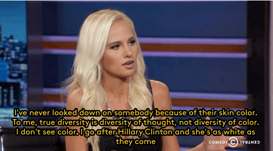
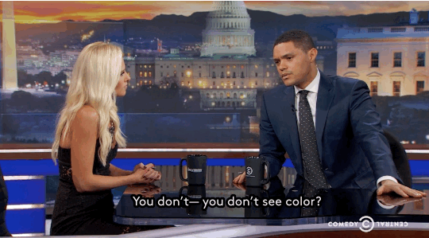
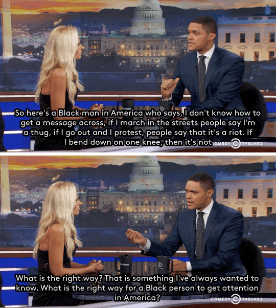
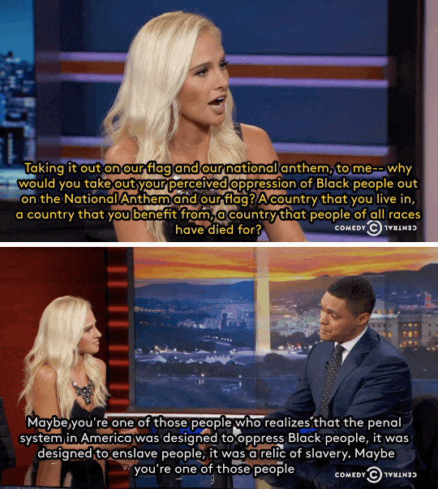
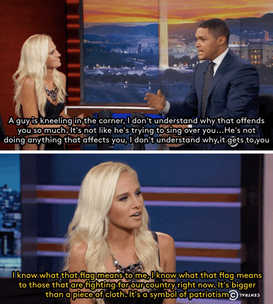
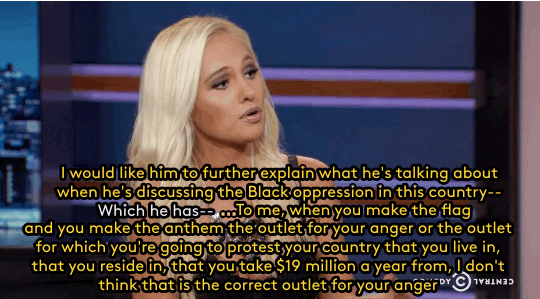

Watch: Trevor Noah asked conservative host Tomi Lahren how Black people in the USA *should* air their grievances and she couldn’t come up with anything
Trevor Noah just conducted one of his most impressive interviews to date, with one of his most controversial guests. Tomi Lahren, a video host on Glenn Beck’s website The Blaze, stopped by the Daily Show for a conversation that spanned from the Black Lives Matter movement to illegal immigration, and the resulting interview is a must-watch for anyone seeking out reason.
Gifs: cc.com
Okay, so I am not excusing her at ALL, what she said was so angry and nonsensical I found it painful to watch… but does anyone else think they are having two separate conversations?
Like, I keep thinking of Haidt here, and the way he says conservatives use different moral frameworks from liberals. And I keep thinking maybe the thing she’s saying, and the thing that is like… a total wall up in her mind so she can’t even SEE what he’s saying… is that for some conservatives, symbols of the community/society/nation, like the flag and the anthem, are almost sacred. Like, “this is how I know where I belong.”
And so to her, taking a knee isn’t just a criticism, it’s like taking a dump on society at large, which is upsetting and even threatening.
Where what Trevor is saying, and what it seems to me Kaepernick actually means (and I very much agree with), isn’t “fuck America forever, fuck vets, fuck anyone who loves their country,” but rather “this anthem symbolizes a promise the US makes to her citizens, of democracy and safety and freedom. I feel that the US is failing in living up to that for black people, thanks to the violence against us from cops and other racism in our society.”
Like… she isn’t getting what the commentary is because she’s looking at it in a way where she’s not capable of seeing the nuance. And Trevor is trying to point that out, but he doesn’t see where she is coming from so he’s not explaining, just being shocked.
(And again, i speak as someone who SHARES his shock here.)
It does seem as though she believes her explanation is her answer and that this should, in her mind, obvious but it also seems as though Noah is the only one truly making an effort to bridge the gap here.
Oh, I agree.
I don’t think she seems very receptive to alternative views, not at this point (if ever). I’m just musing out loud, wondering whether if someone approached her with the question “what does taking a knee express, in your mind?” and let her fumble for an explanation of what’s so wrong with it, and then said “wait, I think there is an alternate explanation of what taking a knee means. Would you feel any less uncomfortable with it if it meant X rather than Y?” it might get further.
I don’t think she sounds very open, so maybe not. But I do kind of wonder in general if those lines of discussion might work on some folks.
I don’t know. I think some people are beyond talking to and she may well be one of them… but I think we need to find the people we can talk to and build what bridges we can. I’m very impressed with Noah for this.
There’s at least one other [very plausible] facet of the revulsion here, which is something like –
Making a Big Statement of Political Dissidence at a football game turns the football game into just another forum for political struggle. We have enough of those already, really. There are no shortage of places where you can go and talk about how your Hated Outgroup is ruining everything. We don’t have a lot of places left that aren’t forums for political struggle. And if there’s no place for shared cultural ritual and shared just-living-life, if every single thing has to be a fight between you and your Hated Outgroup, if politics always trumps every other consideration in the world – well, that’s going to get very bad for everyone.
We survive because we can hang together, in certain ways, even when we disagree about very important things. Thanks for shitting all over that. Thanks for deciding that your Issue of the Day matters more than our last remaining scraps of non-politicized life.
(And it’s particularly ironic that you’re doing this at a football game, given that football has so much American cultural bonding-mojo that it will allow angry white rednecks to cheer on black millionaires.)